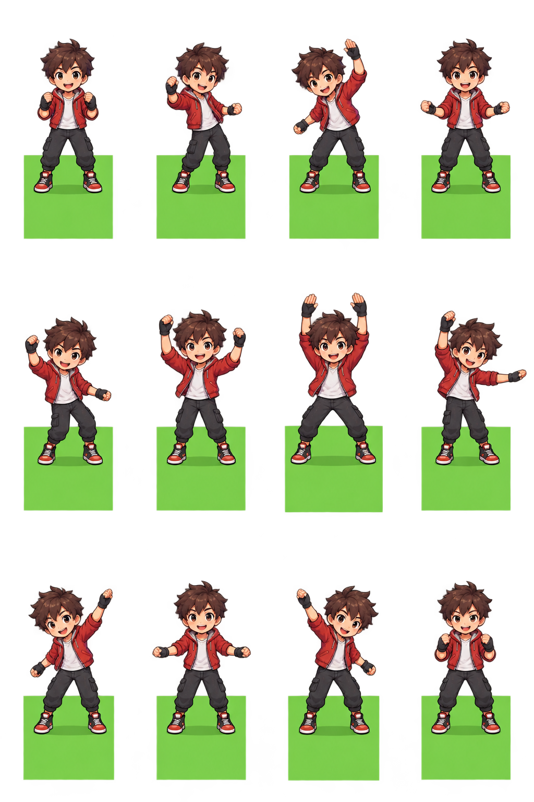

Original 12-pose source retained. Strict guide-panel cuts rejected panel drift; documented transparent-separator recovery then rejected the non-square calibration floor. Complete raw source panels are supplied as diagnostics, with no calibrated runtime sprites or playable loop claimed.
